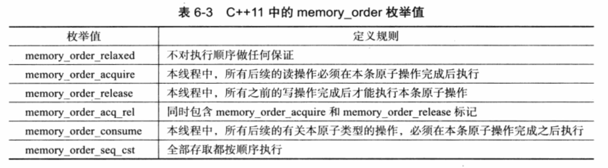

《深入理解 C++11：C++11 新特性解析与应用》读书笔记（二）
文接上回，由于接下来关于“变长模板”、“原子类型与原子操作”等的内容会比较多，为了保证阅读体验，因此这里将分为两篇博文来分别记录。
- （Page：203）在 C++ 中，对于变长函数参数，推荐使用 std::tuple，而非 va_list 的方式。
- （Page：207）变长参数模板的解包：
template<typename ...T> double mul(T ...args); // 入口；
template<typename S, typename ...T> double mul(S arg, T ...args) { return arg * mul<T...>(args...); } // 递归循环体；
template<> double mul() { return 1; } // 边界条件（全特化）；
int main(int argc, char** argv) {
// 模板类型参数通过函数参数自动推导；
std::cout << mul<>(1, 2, 0.5, 5) << std::endl; // 5;
return 0;
}- （Page：209）可以在以下7个位置展开模板参数包：
- 表达式；
- 初始化列表；
- 基类描述列表；
- 类成员初始化列表；
- 模板参数列表；
- 通用属性列表；
- lambda 函数的捕获列表；
- （Page：211）使用模板做变长模板的参数包：
template<typename T>
struct A { // 模板类；
T v;
A(T v) : v(v) {}
};
template<template<typename> class ...A, typename ...T>
double mul(A<T> ...args); // 入口；
template<template<typename> class S, typename P, template<typename> class ...A, typename ...T>
double mul(S<P> arg, A<T> ...args) { return arg.v * mul<A..., T...>(std::forward<A<T>>(args)...); };
template<> double mul() { return 1; }
int main(int argc, char** argv) {
A x(10);
A y(2.0);
std::cout << mul<>(x, y) << std::endl; // 20;
return 0;
}- （Page：216）基于 pthread 互斥锁实现的多线程：
pthread_mutex_t mutex = PTHREAD_MUTEX_INITIALIZER;
int counter = 0;
void add(int n) {
for (int i = 0; i < 1000000; ++i) {
pthread_mutex_lock(&mutex);
counter++;
pthread_mutex_unlock(&mutex);
}
}
void minus(int n) {
for (int i = 0; i < 1000000; ++i) {
pthread_mutex_lock(&mutex);
counter--;
pthread_mutex_unlock(&mutex);
}
}
int main(int argc, char** argv) {
std::thread tA(add, 0), tB(minus, 0);
tA.join();
tB.join();
std::cout << counter << std::endl;
return 0;
}- （Page：217）基于 C++11 原子类型实现的多线程：
std::atomic_int counter = 0;
// std::atomic<int> counter = 0;
void add(int n) { for (int i = 0; i < 1000000; ++i) { counter++; } }
void minus(int n) { for (int i = 0; i < 1000000; ++i) { counter--; } }
int main(int argc, char** argv) {
std::thread tA(add, 0), tB(minus, 0);
std::thread;
tA.join();
tB.join();
std::cout << counter << std::endl;
return 0;
}- （Page：219）原子类型之间不允许拷贝、移动和赋值。而且原子操作的实现是平台相关的，比如一般会通过汇编的 lock 指令来独占总线。
- （Page：225）顺序一致性的内存模型：在 C++11 中的原子类型变量在线程中总是保持着顺序执行的特性，即程序的运行顺序与代码顺序保持一致。
- （Page：225）内存模型：表示机器指令是以什么样的顺序被处理器执行的。一般可分为强顺序和弱顺序。但对于超标量流水线的处理器来说，便有可能将指令的执行顺序打乱，以在一个时钟周期内发射多条指令。
- （Page：227）为原子操作指定内存顺序：

std::atomic<int> x;
std::atomic<int> y;
void foo() {
int t = 1;
x.store(t, std::memory_order_relaxed); // 不对执行顺序做任何保证；
y.store(t, std::memory_order_relaxed);
}
int main(int argc, char** argv) {
std::thread t(foo);
t.join();
return 0;
}- （Page：231）常见的几种内存顺序模型：顺序一致、松散、release-acquire 内存顺序、release-consume 内存顺序以及 acquire-release 内存顺序。通过控制程序运行时各个代码位置的内存顺序，我们可以在保证程序不会发生多线程数据竞争的情况下，让 CPU 减少内存栅栏的插入，进而尽量提高性能。（这里不展开讲了，C++ 并发相关领域的实践可以参考其他书籍）
- （Page：233）线程局部存储：即拥有线程生命周期及线程可见性的变量。
int thread_local code; // 每个线程独占；
void foo(int code) { code = code; }
int main(int argc, char** argv) {
std::thread tA(foo, 10), tB(foo, 20);
tA.join();
tB.join();
std::cout << code << std::endl; // 0;
return 0;
}- （Page：236）使用 std::atexit 注册退出执行函数：
void foo() { std::cout << "exit!" << std::endl; }
int main(int argc, char** argv) {
std::atexit(foo);
return 0;
}- （Page：237）相比 std::exit 需要向线程发出信号，并等待线程结束再执行析构函数并调用 atexit 钩子函数而言，使用 std::quick_exit 以及 std::at_quick_exit 可以让程序快速退出，而并不执行析构函数。资源回收过程交由操作系统来完成。
- （Page：239）C 语言下的 NULL 会被编译器选择性编译成数字 0，__null 内部标识符或者 ((void*)0)。
- （Page：242）nullptr_t 使用规则：
- 所有定义为 nullptr_t 类型的数据都是等价的，其行为也是完全一致的；
- nullptr_t 类型数据可以隐式转换为任意一个指针类型；
- nullptr_t 类型数据不能转换为非指针类型，即使使用 reinterpret_cast 的方式；
- nullptr_t 类型数据不适用于算术运算表达式；
- nullptr_t 类型数据可以用于关系运算，但仅能与 nullptr_t 类型数据或指针类型数据进行比较；
- （Page：244）在模板中 nullptr 只能被推导为 nullptr_t 而非指针类型。
- （Page：251）在声明构造函数时，不建议将 explicit 与 =delete 一起使用，否则可能导致无法禁止类型转换（比如参数 char 隐式转换为 int，并调用对应的非 explicit 构造函数）的发生。
- （Page：20）最简单的 lambda 形式：
auto l = []{ return 0; };- （Page：256）标准规定，在块作用域外的 lambda 函数其捕获列表必须为空。而在块作用域内的 lambda 函数仅能捕获其父作用域中的自动变量。
- （Page：259）现阶段，lambda 是仿函数（函数对象）的一种语法糖。
- （Page：261）在 C++11 中，lambda 函数默认是内联的。
- （Page：263）lambda 的类型被定义为“闭包”的类，而每一个 lambda 表达式则会产生一个闭包类型的临时对象。lambda 可以向函数指针转换，但前提是其没有捕获任何变量。
- （Page：266）现有 C++11 标准中的 lambda 等价于有常量 operator() 的仿函数。
int main(int argc, char** argv) {
int v = 10;
auto l = [=]() {
// 当以值传递时无法修改变量的值（constness），而引用则可以。
// 因为引用本身没有顶层 const 的性质，引用本身初始化不会被改变，符合 const 成员函数的 bitwise-constness 性质；
// v = 100;
};
return 0;
}- （Page：275）使用 lambda 代替仿函数（函数对象）应满足以下条件：
- 是局限于一个局部作用域中使用的代码逻辑；
- 这些代码逻辑需要被作为参数传递；
- （Page：280）指定结构体的数据对齐方式：
struct alignas(32) A {
double a;
double b;
double c;
double d;
};
int main(int argc, char** argv) {
std::cout << alignof(A) << std::endl; // 32;
return 0;
}- （Page：281）对齐值必须是 2 的自然数幂次。
- （Page：281）查询基本对齐值（一般不建议对齐值超过该值）：
int main(int argc, char** argv) {
std::cout << alignof(std::max_align_t) << std::endl;
return 0;
}- （Page：291）C++11 中的通用属性：
- [[noreturn]]：用于标识不会返回的函数，即函数调用完后续代码不会再被执行，比如会抛出异常的函数、有终止应用程序的函数、有死循环的函数；
- [[carries_dependency]]：用于保证对当前原子类型数据的读取操作先于所有之后关于该原子变量的操作完成，但不影响其他原子操作的顺序；
- （Page：297）用于存储 Unicode 数据的数据类型：
int main(int argc, char** argv) {
char utf8[] = u8"你好";
char16_t utf16[] = u"你好";
char32_t utf32[] = U"你好";
std::cout << utf8 << std::endl;
std::cout << utf16 << std::endl;
return 0;
}- （Page：303）原生字符串字面量 R”(…)”：
int main(int argc, char** argv) {
std::cout << R"(
Hello,
World!
)" << std::endl;
std::cout << uR"(你好)" << std::endl;
std::cout << u8R"(你好)" << std::endl;
std::cout << UR"(你好)" << std::endl;
return 0;
}- （Page：304）const char* 以及原生字符串的连接规则：
int main(int argc, char** argv) {
const char* strA = "Hello, " "world!";
std::string strB = "Hello, " "world!";
std::u8string strC = u8"你" "好"; // 从 C++20 开始支持;
std::u16string strD = u"你" "好";
std::u32string strE = U"你" "好";
return 0;
}